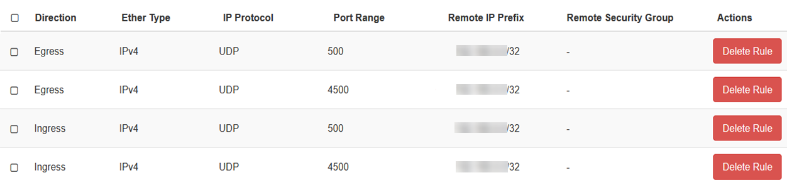
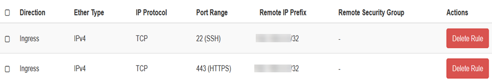

How to configure a VPN to enable Monitoring of OpenStack instances with Managed Monitoring as a Service
Overview
To enable monitoring of your OpenStack instances using Managed Monitoring as a Service, you must stand up an OpenStack instance containing either a VPN appliance or an operating system with a VPN application installed. We recommend using pfSense as it has been tried and tested on the UKCloud platform.
This article shows how to set up pfSense as a VPN to use for monitoring OpenStack instances.
Installing and configuring pfSense
The steps for installing and configuring pfSense are:
Creating a pfSense image
To obtain the latest pfSense image, raise a service request via the My Calls section of the UKCloud Portal.
In the OpenStack Horizon dashboard, expand Compute then select Images.
Click the Create Image button.
In the Create Image dialog box, in the Image Name field, enter an appropriate name for the image, for example,
pfSense2.4.4_http.In the File field, click Browse and locate the pfSense image.
From the Format list, select QCOW2 - QEMU Emulator.
In the Minimum Disk field, enter
60.Click Create Image.
Setting up the network
We recommend creating a new network for the VPN to reside on.
Expand Network then select Networks.
Click the Create Network button.
In the Create Network dialog box, provide the following information:
Networks tab:
Network Name: Enter
VPN Bridgeor something similar.Don't change any of the remaining options.
Subnet tab:
Subnet Name: Leave blank.
Network Address: The network subnet in a CIDR format. The subnet should not already be in use and the subnet mask should be
x.x.x.0/28.IP Version: Select
IPv4.Gateway IP: The IP dedicated to the gateway of the network. For ease of use, use the network address but ensure that the last octet is a
.1, for example,192.168.0.1.
Subnet Details tab:
- DNS Name Servers: Enter
8.8.8.8or your preferred DNS server.
- DNS Name Servers: Enter
Click Create.
Attaching the network to the router
The next step is to attach the network to the router.
Expand Network then select Network Topology.
Hover over the internet router and click Add Interface.
In the Add Interface* dialog box, provide the following information:
Subnet: Select the network the VPN will sit on.
IP Address: Leave this blank so the gateway address you picked in the previous step will be chosen.
Click Submit.
Applying security groups
You'll need to apply security groups to the VPN server to be able to talk to the other side.
Expand Network then select Security Groups.
Click the Create Security Group button.
In the Create Security Group dialog box, in the Name field, enter
UKCloud IT Operations VPNthen click Create.Apply the following security group rules, where the Remote IP Prefix is your peer endpoint, as provided by UKCloud.

Create a second security group with the name
SSH & Web Accesswith the following rules, where the Remote IP Prefix is your public IP address and the Port Range is 443 and 22 (HTTPS and SSH). This enables you to access the pfSense console and web GUI.
Create a third security group with the name
Managed Monitoring Ports.The rules for this security group allow the UKCloud IT Operations subnet to communicate with the ports that are required to be monitored as specified in the MITO Data Capture Form. You must also allow ICMP to and from the local and peer subnets.
The Ingress entry IP address must be the UKCloud IT Operations subnet, which will be provided by UKCloud.
The Egress entry IP address must be the required monitored subnet(s), which are specified in the MITO Data Capture form.

If you have opted for UKCloud Patching as a Service you must also create an additional security group with the name
Managed Patching Ports.The rules for this security group allow the UKCloud IT Operations subnet to communicate through the VPN to patch the machines on the patching ports. Raise a service request to obtain the ports that require opening.
Deploying the VPN instance
You're now ready to deploy the instance.
Expand Compute then select Instances.
Click the Launch Instances button.
In the Launch Instance dialog box, provide the following information:
Details tab:
Instance Name: Enter
MMaaS-VPN-Endpointor similar.Description: Leave blank.
Availability Zone: Select Any Availability Zone.
Count: Enter
1.
Source tab:
Select Boot Source: Select Image.
Create New Volume: Select No.
Select your pfSense image from the list of images.
Flavor tab:
- Select t1.large.
Networks tab:
- Select the network that you created earlier.
Security Groups tab:
- Select the security groups that you created earlier: UKCloud IT Operations VPN, SSH & Web Access, Managed Monitoring Ports, Managed Patching Ports (if applicable).
Click Launch Instance.
Configuring networking for the VPN endpoint
Next, you'll need to configure networking for the VPN endpoint.
On the Instances page, in the dropdown for your new instance, select Associate Floating IP.
In the Manage Floating IP Associations dialog box, from the IP Address list, select a public IP address.
From the Port to be associated list, select the local IP address of the VPN instance.
You'll need to add two Allowed Address Pairs entries for the instance's port.
In the Horizon dashboard, expand Networks then select Network.
Click your VPN network's name.
Select the Ports tab.
Click the port that corresponds to the instance's internal IP address.
Click Allowed Address Pairs then +.
Create an address pair for the local subnet and click Submit.
Create a second address pair for the peer subnet and click Submit.
You need to add a static route to the OpenStack router to ensure that UKCloud Monitoring infrastructure is routed via the VPN.
In the Horizon dashboard, expand Network then click Routers.
Select your internet router.
On the Static Routes tab, click the Add Static Route button.
In the Add Static Route dialog box, provide the following information:
Destination CIDR: The UKCloud IT Operations subnet.
Next Hop: The private IP for the VPN instance.
Configuring the VPN endpoint
The final step is to configure the VPN endpoint using the pfSense dashboard.
Providing the security groups are set up correctly, whilst on you local machine and using the IP address specified in the SSH & Web Access security group, browse to
http://<floating-ip>(using the floating IP you set in the previous section).You can find pfSense administrator credentials in Default Username and Password or you can contact UKCloud Support.
Once you're logged in, you should see the following dashboard:

In the top navigation bar, go to VPN > IPsec > under tunnels > Add P1. Provide the following information (this must match the IPsec):
General Information
Key Exchange version: IKEv2
Internet Protocol: IPv4
Interface: WAN
Remote Gateway: This will be provided by UKCloud
Phase 1 Proposal (Authentication)
My Identifier - IP address:
Peer Identifier - IP address: This will be provided by UKCloud
Pre-Shared Key: This will be provided by UKCloud
Phase 1 Proposal (Encyption Algorithm)
Algorithm: AES
Key length: 256 bits
Hash: SHA256
DH Group: 16 (4096 bit)
Advanced Options
- Leave all as default
Click Save.
Go to VPN > IPsec > expand Show Phase 2 Entries > Add P2. Provide the following information:
General Information
Disabled: Leave unselected
AES | 256 bits
Hash Algorithms: SHA256
PFS key group: 16 (4096 bit)
Lifetime: 3600
Advanced Configuration
- Leave the rest blank
Click Save.
Your IPsec configuration should look similar to the following:

You'll need to apply firewall rules on the pfSense WAN interface to let traffic in and out.
Go to Firewall > Rules > WAN > Add.
Leave everything as default, but under Protocol, change TCP to Any.
You'll need to apply firewall rules on the pfSense IPsec interface to let traffic in and out.
Go to Firewall > Rules > IPsec > Add.
Leave everything as default, but under Protocol, change TCP to Any.
Contact UKCloud Support to confirm that the VPN tunnel is up between the UKCloud IT Operations subnet and your monitored subnet.
Feedback
If you find a problem with this article, click Improve this Doc to make the change yourself or raise an issue in GitHub. If you have an idea for how we could improve any of our services, send an email to feedback@ukcloud.com.